1. T-90M "Proryv"
Cea mai modernă versiune a tancului T-90, echipată cu un tun îmbunătățit de 125 mm, protecție dinamică Relikt și sistem modern de comandă și control.
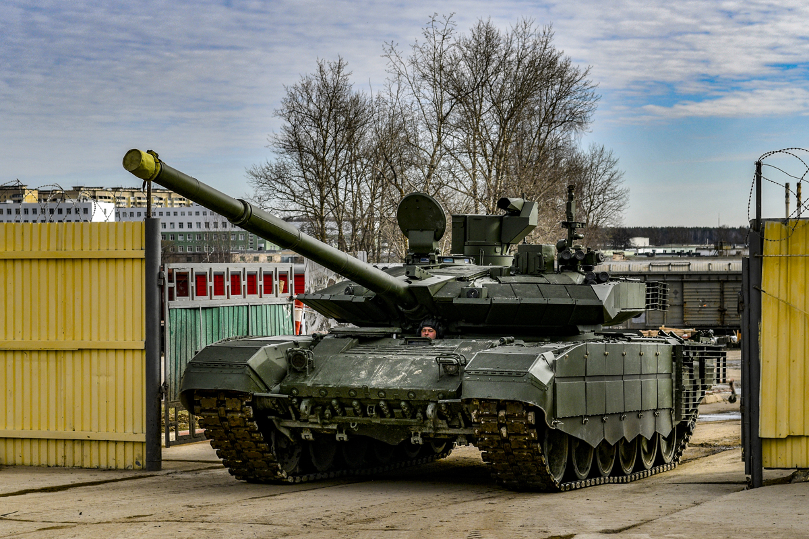
Cea mai modernă versiune a tancului T-90, echipată cu un tun îmbunătățit de 125 mm, protecție dinamică Relikt și sistem modern de comandă și control.

O modernizare profundă a tancului T-80BV, propulsat de un motor cu turbină cu gaz, ideal pentru condiții de temperaturi scăzute.
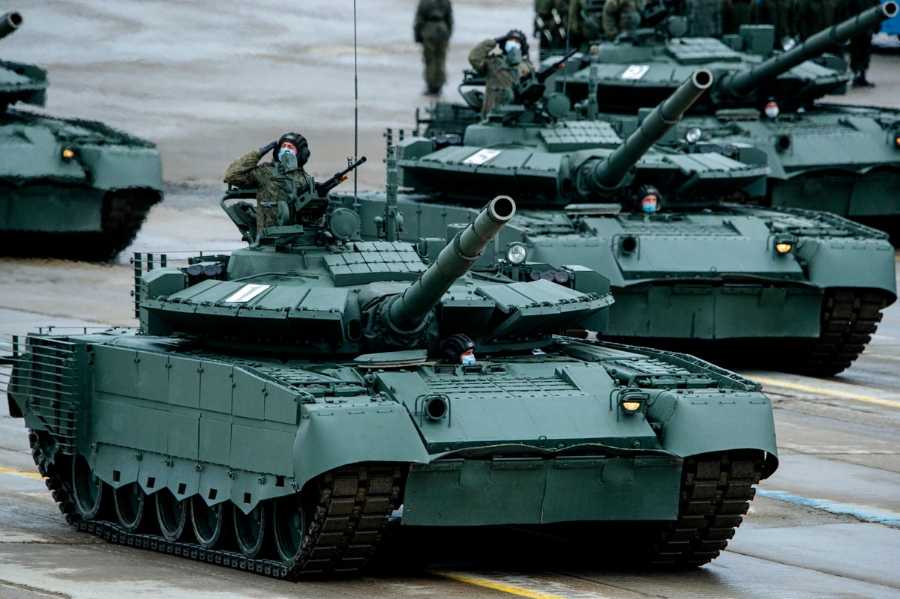
Varianta modernizată a bine-cunoscutului T-72, dotată cu un motor mai puternic (1130 CP), sistem de ochire Sosna-U și turelă protejată suplimentar.

Tanc de nouă generație bazat pe platforma universală Armata, dotat cu turelă nepopulată și capsulă blindată izolată pentru echipaj.
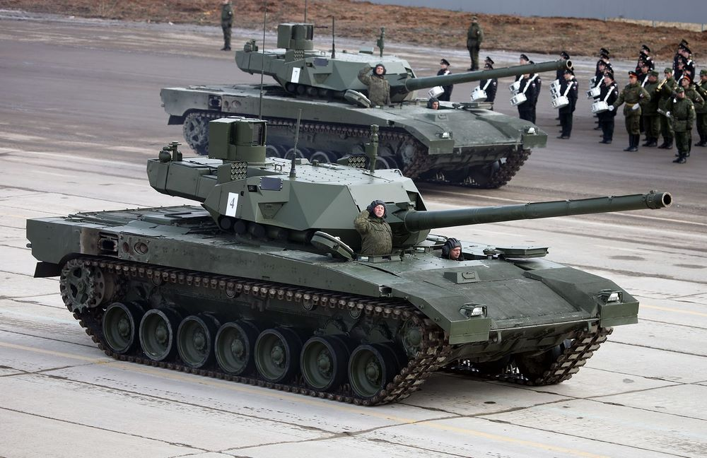
Vehicul de susținere a tancurilor conceput pentru lupta în mediul urban, echipat cu două tunuri automate de 30 mm și rachete ghidate Ataka.
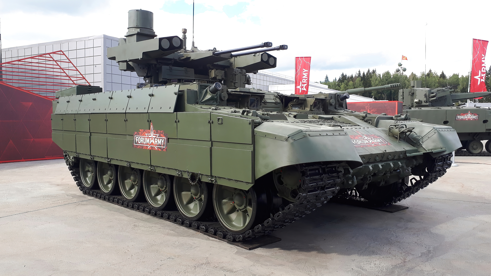
Tanc ușor aeropurtat și amfibiu, echipat cu un tun principal de 125 mm capabil să tragă cu muniție similară tancurilor principale de luptă.
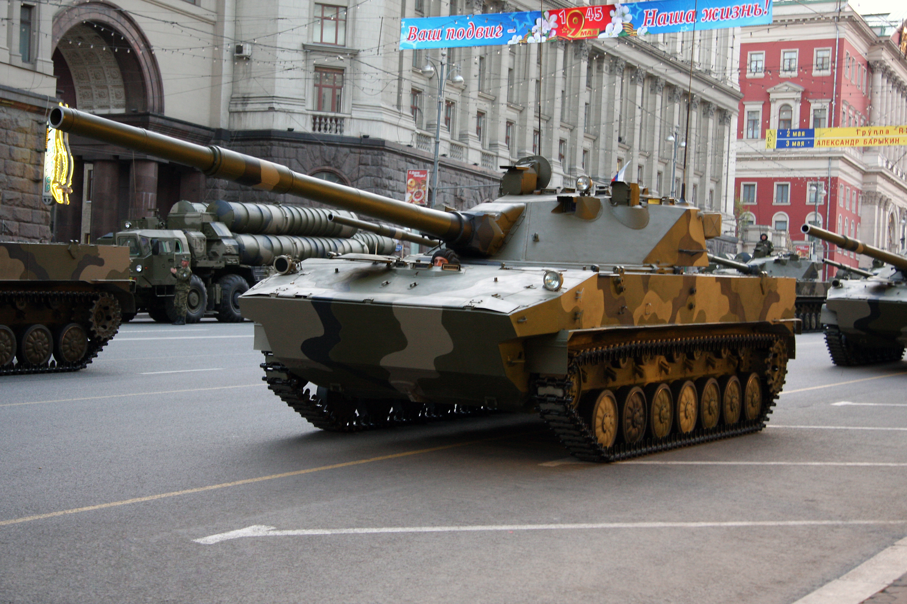
| Model | Tip Vehicul | Armament Principal | Echipaj | Greutate (tone) |
|---|---|---|---|---|
| T-90M | Tanc Principal de Luptă | Tun 125 mm 2A46M-5 | 3 persoane | ~48 t |
| T-80BVM | Tanc Principal de Luptă | Tun 125 mm 2A46M-4 | 3 persoane | ~46 t |
| T-72B3M | Tanc Principal de Luptă | Tun 125 mm 2A46M-5 | 3 persoane | ~45 t |
| T-14 Armata | Tanc de Nouă Generație | Tun 125 mm 2A82-1M | 3 persoane | ~55 t |
| BMPT Terminator | Vehicul de Susținere | 2x Tun 30 mm 2A42 + 4x Rachete Ataka | 5 persoane | ~48 t |
| 2S25M Sprut-SDM1 | Tanc Ușor / Distrugător de Tancuri | Tun 125 mm 2A75M | 3 persoane | ~18 t |
Tanc mediu sovietic emblematic, renumit pentru blindajul său înclinat inovator, mobilitatea excelentă pe teren dificil și tunul puternic de 76.2 mm F-34.
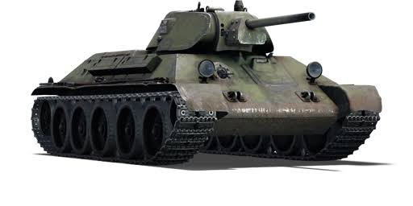
O evoluție majoră a celebrului T-34, introdusă în 1944. A primit o turelă mai mare în trei persoane și un tun redutabil de 85 mm ZiS-S-53.
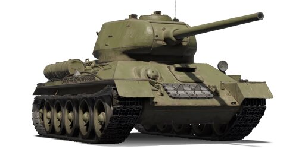
Tanc greu sovietic care a șocat trupele germane în anul 1941 prin blindajul său extrem de gros și greu de penetrat de majoritatea tunurilor antitanc.
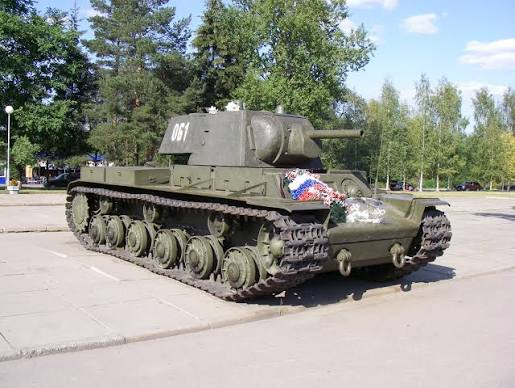
Variantă masivă de asalt bazată pe șasiul KV-1, dotată cu un obuzier gigant de 152 mm M-10 într-o turelă grea, supranumită „frigiderul”.
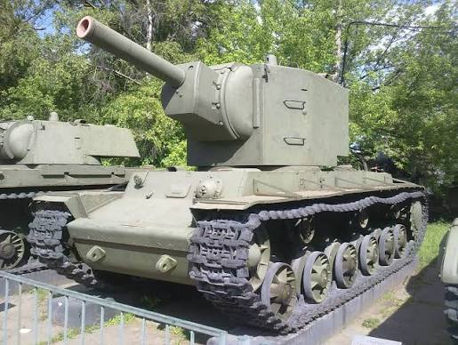
Primul tanc din seria grea numită în onoarea lui Iosif Stalin. Înarmat cu un tun de 85 mm, creat pentru a oferi un raport superior între blindaj și mobilitate.
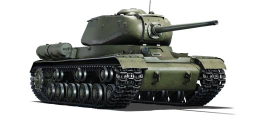
Un tanc greu avansat de la sfârșitul războiului, celebru pentru silueta joasă, turelă emisferică și coca cu blindaj frontal în formă de „nas de știucă”.
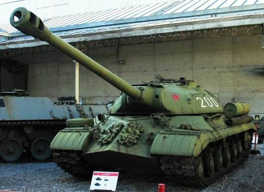
| Model | Tip Vehicul | Armament Principal | Echipaj | Greutate (tone) |
|---|---|---|---|---|
| T-34 mod. 41 | Tanc Mediu | Tun 76.2 mm F-34 | 4 persoane | ~26.5 t |
| T-34-85 | Tanc Mediu | Tun 85 mm ZiS-S-53 | 4 sau 5 persoane | ~32 t |
| KV-1 | Tanc Greu | Tun 76.2 mm ZIS-5 | 5 persoane | ~45 t |
| KV-2 | Tanc Greu de Asalt | Obuzier 152 mm M-10 | 6 persoane | ~52 t |
| IS-1 | Tanc Greu | Tun 85 mm D-5T | 4 persoane | ~44 t |
| IS-3 | Tanc Greu | Tun 122 mm D-25T | 4 persoane | ~45.8 t |